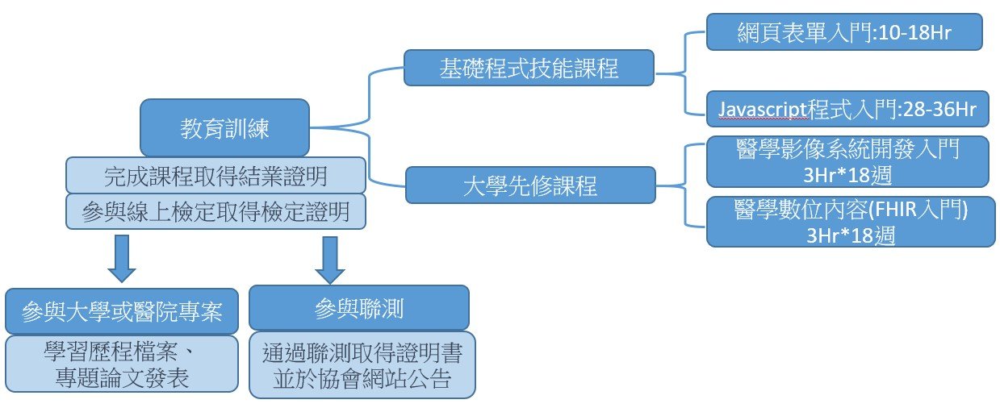

醫學資訊教育系列課程

HTML 及 JavaScript 入門
VS code 安裝及使用、 VS code 安裝及使用、、發佈網頁、JS 入門語法、JSON 資料處裡、HTML 表單資料上傳 FHIR 伺服器、發佈網頁
程式範例連結
- 取得標準化醫療平台上之病人基本資料、看診資料、檢驗檢查結果，將資料轉換成 HTML (或 pdf) 文件呈現
- 將臨床醫療量測的波形資料(如心電圖MIT ECG EBM ECG 、腦波等)轉換成標準規格，並於視窗或網頁介面中呈現
- 依據醫學影像呈現及標記程式範例醫學影像呈現及標記程式範例 ，取得標記座標資訊。設計使用介面，加入標記之解剖或病變說明資訊，轉換成醫資標準規格，上傳到 web 醫學影像平台
- 程式處理病變(或不同物種)之NGS 基因序列檢測資料。提供介面如 NGS IGV 範例 ，讓使用者瀏覽及選取特定基因片段，呈現其異變與參考基因的差異狀況(ATGC) 差異狀況
本課程為教育部—生醫產業與新農業學產研鏈結人才培育計畫A類—陽明大學及慈濟大學夥伴學校團隊合作提供之線上課程